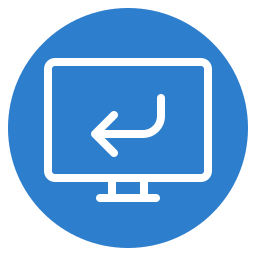

SSH，照常用。
支持密钥、密码和跳板机。

Reverse Ports在 VS Code 里，转发本机代理和开发服务。
127.0.0.1:7890127.0.0.1:7897支持密钥、密码和跳板机。
勾选「终端代理」，新终端即可用。
远程端口不向公网开放。
方向反过来了。VS Code 的端口转发通常让你的电脑访问远程服务；Reverse Ports 让远程服务器访问你电脑上的服务。
先在本机终端用 SSH 连一次，核验并确认主机指纹。扩展使用本机 OpenSSH，与 Remote SSH 的连接相互独立；之后需要密码时，会在 VS Code 中提示输入。
不会。它给新远程终端设置 HTTP_PROXY 等环境变量，只影响读取这些变量的程序。已经打开的终端需要重开；取消勾选也不会改动旧终端。自动设置需要在对应的 Remote SSH 工作区中使用。